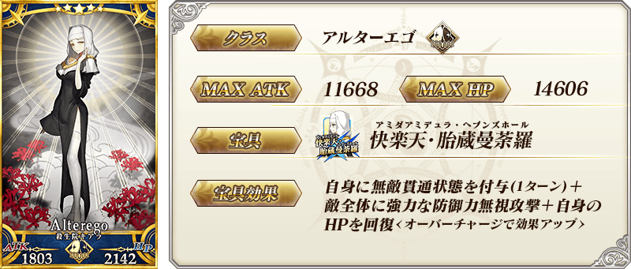
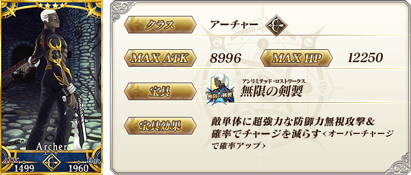
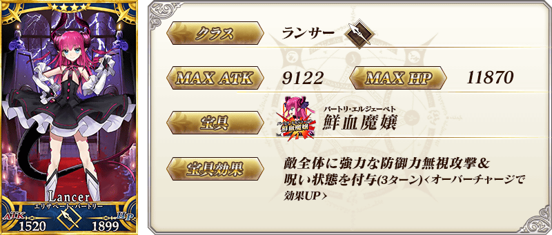
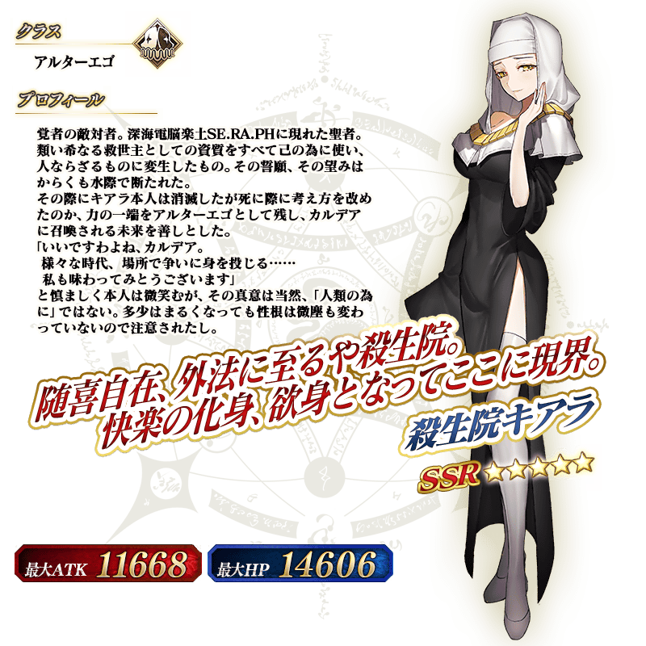

◆「Fate/EXTRA CCC特別活動Pick Up2召喚」期間◆
期間：2017年5月10日(三) 16:00～5月24日(三) 15:59
舉辦期間限定「Fate/EXTRA CCC特別活動Pick Up2召喚」！
※未終局特異點通過也能進行 Fate/EXTRA CCC特別活動Pick Up2召喚。
在「深海電腦樂土 SE.RA.PH」活躍的Servant「★5(SSR)殺生院祈荒」以期間限定登場！
殺生院祈荒有賦予活動道具「櫻花籌碼」的掉落獲得數提升的加成！
另外「★4(SR)Emiya〔Alter〕」「★4(SR)伊莉莎白・巴托里(Lancer)」「★3(R)羅賓漢」Pick Up！
詳情請在聖晶石召喚畫面左下的召喚詳細確認。
※殺生院祈荒在Pick Up期間結束後，不會追加到故事召喚。
※Pick Up期間中、Emiya〔Alter〕在亞種特異點Ⅰ通過前也能入手。
Pick Up期間中，期間限定Servant、Pick UpServant的出現機率提升！
10次召喚中確定1張★4(SR)以上和確定1位★3(R)以上的Servant！
※確定★4(SR)以上包含Servant和概念禮裝。
※「出現機率提升」意指比同稀有度的其餘Servant及概念禮裝出現機率更高的設定。






